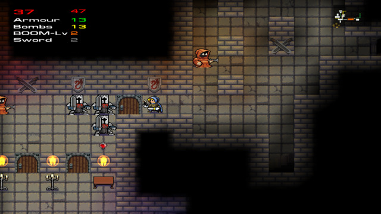
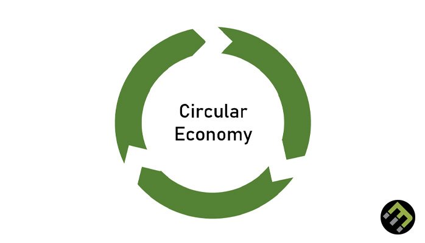
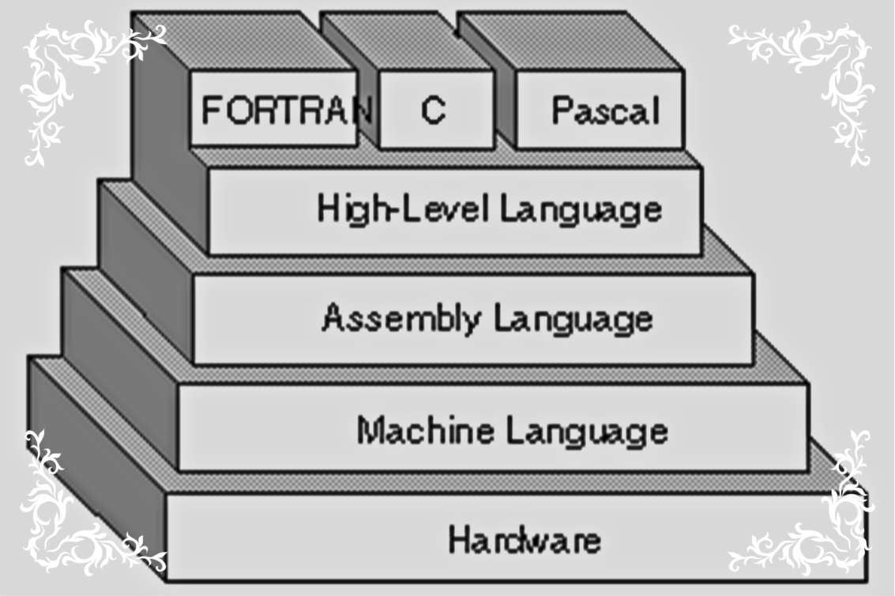
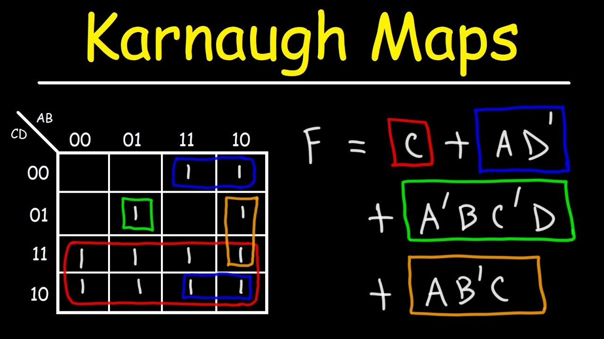

A game developed in C++ that has the same style as Pacman and Super Mario (vintage games).
The game was developed as a project to explore graphs, DFS, BFS, and Dijkstra algorithm. The
game was created with 2 other develpers. The game has 2 characters, a knight (user controlled) &
a ghost (Dijkstra controlled).
A python script that checks if the password you entered was cracked before. The Script uses the
API of haveibeenpwned locally to limit password sharing with third party websites; therefore,
providing more security. The project was created with 1 other developer; I was the project
manager.

It's an app written in Java that promotes the principles of circular economy. The app allows its
users to trade items they no longer use or need with other users' items
The project was created by 3 other developers and I. The project was created using agile
development methods.

The follwing project was written in C++ to understand the underlying logic behind ARM assembly
langauge. The project translates binary code to ARM code and compiles it at the same time.
The project was created by myself and 2 other members. I was the project maneger.
This app is written in Kotlin. It was created at the beginning of the pandemic to help spread
awareness about COVID-19 symptoms and prevention methods.The app also has movie suggestions and
home workouts to encourage its users to stay at home.
The following project was created by myself and 2 other members. The project's purpose was to
explore how cache accesses data and how different memory requests can affect the cache's
effectiveness. several tests were conducted on the simulated cache and the data
analyzed.
The following python script is a project created to discover the power of python packages. The
project uses several packages to create a Siri-like assistant that answers
a limited number of questions.

The following project is created by myself and 1 other developer. K-Maps are the pillars of
modern digital design. The following project solves
any inputted K-map with any size.